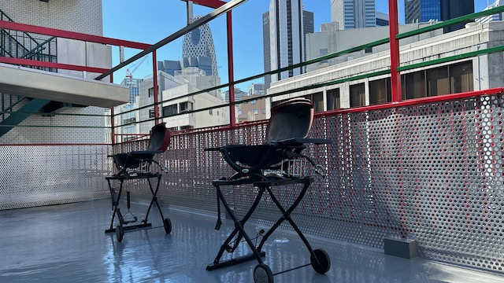
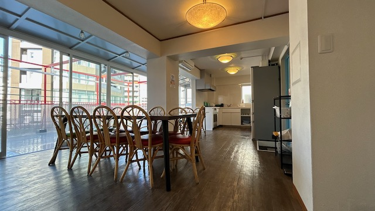
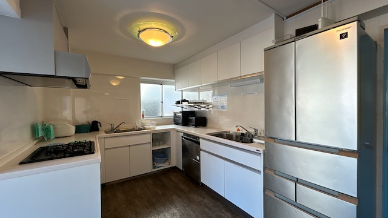
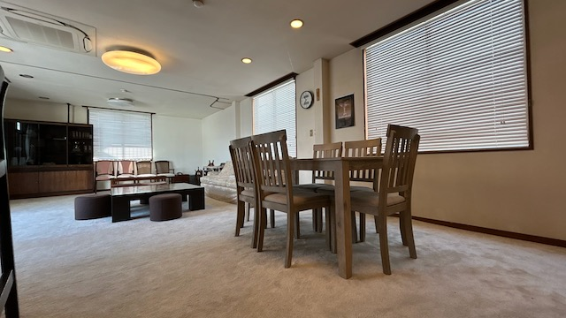
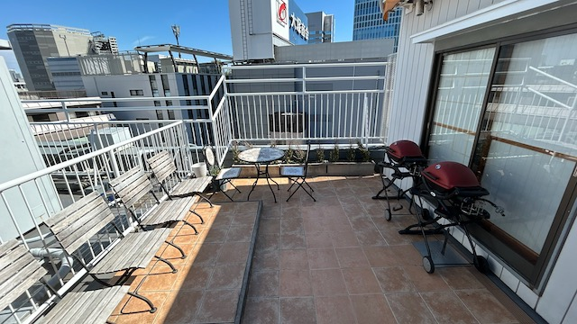

BBQ、イベント、パーティー。
新宿の空の下で最高の時間を。
仲間と集まって、ちょっと特別な時間を。
開放感のあるプライベートバルコニー付きの空間で、 BBQやパーティー、イベントを思いっきり楽しめます。
都会の屋上テラスと、ぬくもりのある室内スペース。 友達との集まり、誕生日パーティー、ちょっとしたイベントまで 気の合う仲間と自由に使える、おしゃれな貸切パーティースペースです。

都心の空の下で楽しむ、開放感あふれるルーフトップBBQスペース。 新宿のビル街を見渡せる屋上テラスでは、都会にいながらアウトドア気分を味わうことができます。
BBQグリルやテーブルなどの基本設備が揃っているため、 食材を持ち込むだけで気軽にBBQパーティーが楽しめます。
仲間との集まり、会社の懇親会、誕生日パーティーなど、 さまざまなシーンで利用できる人気の屋上スペースです。
詳しく見る →
屋上BBQの後は、ゆったりくつろげる室内スペースへ。 明るく開放感のあるリビングは、友達との集まりやパーティーにもぴったりです。
ソファやテーブルが揃っているので、食事を楽しんだり、 ゲームやおしゃべりをしたり、思い思いの時間を過ごせます。
誕生日会、ホームパーティー、女子会、ちょっとしたイベントなど、 仲間と過ごす特別な時間をゆったり楽しめる空間です。

屋上BBQの後は、ゆったりくつろげる室内スペースへ。 明るく開放感のあるリビングは、友達との集まりやパーティーにもぴったりです。
ソファやテーブルが揃っているので、食事を楽しんだり、 ゲームやおしゃべりをしたり、思い思いの時間を過ごせます。
誕生日会、ホームパーティー、女子会、ちょっとしたイベントなど、 仲間と過ごす特別な時間をゆったり楽しめる空間です。
詳しく見る →
広いダイニングスペースは、大人数のイベントにも対応。 友人同士の集まりや誕生日パーティー、交流会などにも利用できます。
室内スペースと屋上テラスを組み合わせることで、 自由度の高いイベントを開催することができます。
企業の懇親会や撮影イベント、 プライベートパーティーなど、さまざまなシーンで利用されています。

新宿の街並みを見渡せる屋上テラスは、 都会にいながら開放感を味わえる特別な空間です。
昼間は青空の下でBBQやパーティーを楽しみ、 夕方には夕焼け、夜には都会の夜景を眺めながら過ごすことができます。
写真を撮りたくなるロケーションで、 SNS映えするイベントや撮影にも人気のスポットです。
新宿の夜景が一望できるテラスのある秘密基地、
「BBQテラス西新宿」は開放感と爽快感が味わえるパーティースペースです。
可動式の屋根付きで日よけも雨よけも万全。
ご家族でも、さまざまな宴会にもぴったりです。